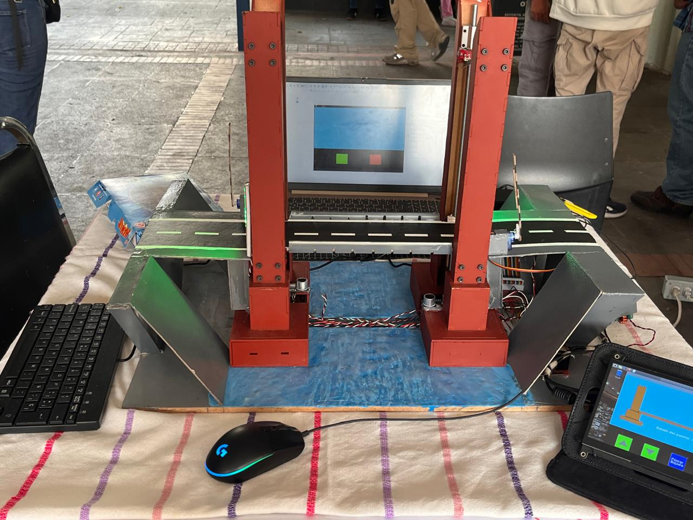

Sistema de control de puente movil
A physically built, laser-cut drawbridge controlled by a Raspberry Pi 5 — winner of the Interprepas competition.
Overview
Stack

A physically built, laser-cut drawbridge controlled by a Raspberry Pi 5 — winner of the Interprepas competition.
